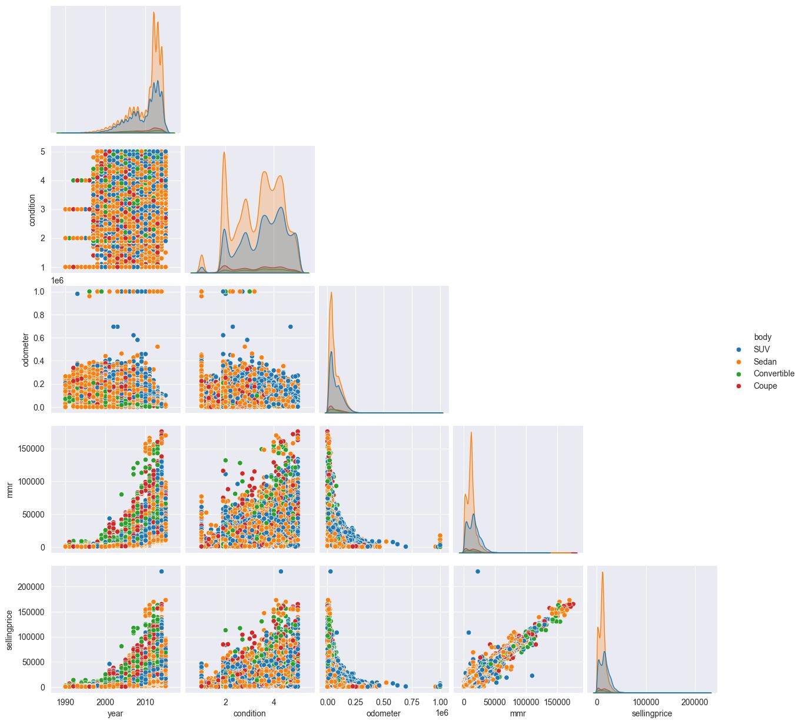
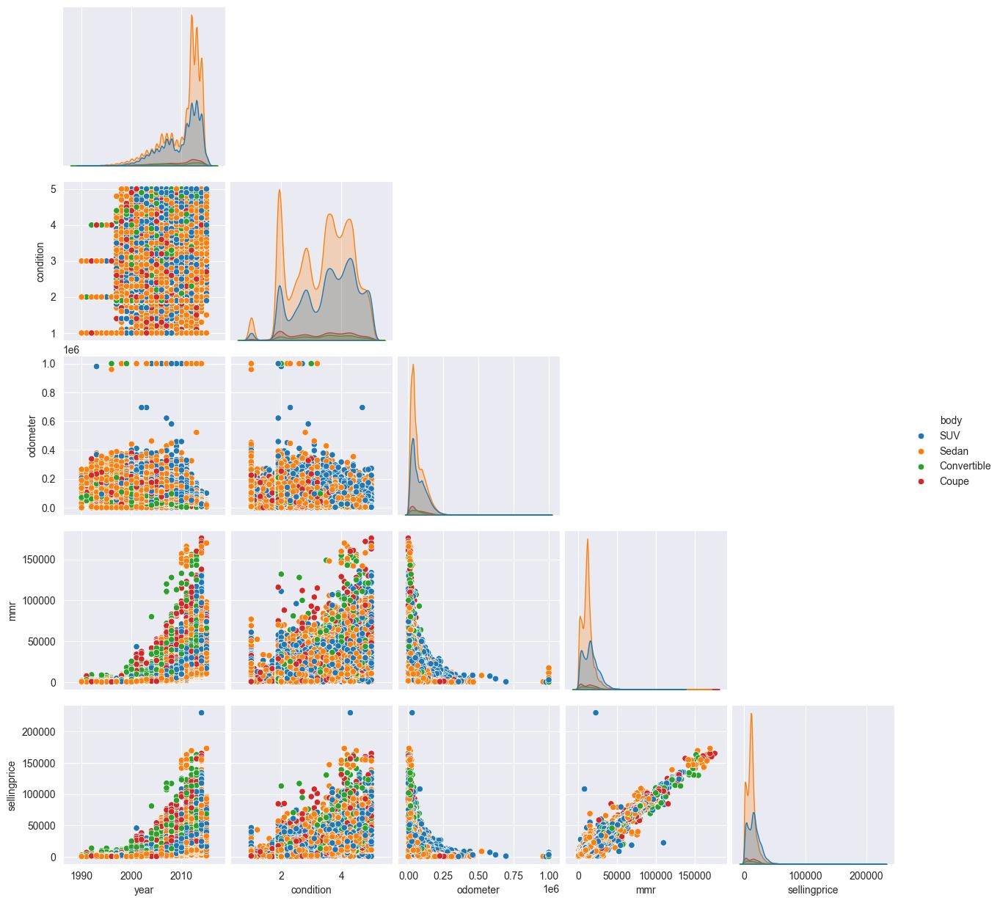

Microsoft PowerBI
Adventure Works
This project features four interactive dashboards for detailed business analysis. Each dashboard includes key performance indicators (KPIs) and various business statistics calculations. Additionally, it includes a toggle bar for easy navigation between different sheets.
Executive dashboard
Map
customer Detail
Product Details
Market Analysis
Using market-related data to define KPIs and analyze profit, return, and revenue for Maven Market. The project compares and visualizes values over selected time periods to derive insights into market performance.


Python
Demographic Analysis
Used Libraries: pandas, datetime, matplotlib, seaborn, numpy
This project analyzes demographics in relation to market behavior and transactions. Various programming and analytical methods were used to join, filter, and aggregate the data, enabling effective visualization and extraction of business insights.
- Key Objectives
Coffee Production Analysis and dashboard
Used Libraries: pandas, matplotlib, numpy
This project analyzes global coffee production and addresses key questions through various stages of data analysis.
Key Objectives:
- Read data from multiple CSV files
- Reshape and prepare the data for visualization
Analyses and Questions Addressed:
- Analysis 1: Coffee production trends
- Analysis 2: Coffee import patterns
-
Analysis 3: Coffee prices in conjunction with consumption
- Which importing countries consume the most coffee?
- In which countries are the highest coffee prices paid?
- Can we increase profit margins by targeting specific export countries?


United States Used Cars analysis
Used Libraries: pandas, matplotlib, seaborn, numpy
This project analyzes an extensive real-world dataset on used cars in the United States, uncovering key market insights through data visualization. It includes statistical analysis of specific market segments to highlight trends and patterns.
- Key Objectives:
 

MySQL
Baseball Major League Analysis
This project involves advanced SQL analysis of the US Baseball Major League, divided into four parts:
- Part 1: School Analysis
- Part 2: Salary Analysis
- Part 3: Player Career Analysis
- Part 4: Player Comparison Analysis
Below you can see two examples of queries used in the mentioned analysis:


Maven Movies Analysis
This project uses SQL to extract and analyze key business insights based on the data requests from the business owner. The analysis covers:
- Inventory management
- In-store sales and comparative analysis
- Customer behavior and segmentation
- Calculation of key statistical metrics
Below you can see some examples of the queries used in the script


Capstone Project
Used Technologies: Python, Tableau, PostgreSQL
Capstone Project
Highlights: python / pandas / matplotlib / tableau / API / GitHub / google slides / DBeaver / Visual Studio code
"Unveiling the organic evolution: a deep dive into EU food trends"